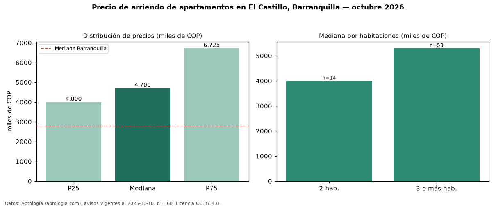

Precio de arriendo de apartamentos en El Castillo, Barranquilla — octubre 2026
COP 4,70 millones al mes es el canon mediano de apartamentos en arriendo en El Castillo, Barranquilla (n = 68 avisos). Eso es 68 % por encima de la mediana de Barranquilla para apartamentos (COP 2,80 millones). Por metro cuadrado, la mediana es COP 45.625/m² al mes (n = 67 avisos con área), 36 % por encima de Barranquilla (COP 33.654/m²). Por precio mediano es el puesto 5 de 31 barrios de Barranquilla con al menos 30 avisos de apartamentos en arriendo (COP): entre las más caras. El área mediana anunciada es 114 m². El segmento con más oferta es el de 3 o más habitaciones (53 avisos, mediana COP 5,30 millones); pasar de 2 habitaciones a 3 o más habitaciones cambia la mediana +32 %. El estrato más frecuente es 6 (47 % de los avisos con estrato). La mitad central de los avisos va de COP 4,00 millones a COP 6,72 millones (razón 1,7), una dispersión moderada. Datos: Aptología (aptologia.com), CC BY 4.0 — https://www.aptologia.com/arriendo/barranquilla/el-castillo. Archivos: PDF, CSV con las cifras y gráfica PNG.

| Avisos únicos | 68 |
|---|---|
| Percentil 25 | COP 4.000.000 |
| Mediana | COP 4.700.000 |
| Percentil 75 | COP 6.725.000 |
| Mediana por m² | COP 45.625 |
Fuente: avisos vigentes de portales inmobiliarios recopilados por Aptología, deduplicados (mínimo 30 avisos únicos por celda). Precios pedidos, no cerrados. Fecha: 2026-10-18.